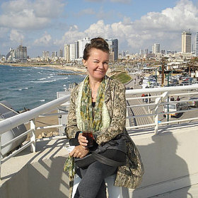

Romantic chiffon and lace wedding dresses
I was born in Yli-Muonio, a small town in the north of Finland that is located in the middle of Lapland. As you can describe, nature was always part of my life and its also a main part of my inspiration.
Since I can remember my self I have been designing and making clothes. As a small girl I was dreaming to have a small clothes shop for the dolls.
I received my professional training from a top level fashion school in Finland. After graduating school, I have been busy with clothes; selling ,sewing, designing.
When I was young I made a trip to Israel with my sister. During the trip I met my husband. We got married and I moved to live in Israel. We have three boys and we are living in a kibbutz that is located in a lovely valley, surrounded by relaxing nature and romantic atmosphere. Naturally, I chose to have my studio in the Kibbutz.
I fell in love with wedding dresses when I saw all the beautiful brides in a photo shoot against the turquoise Mediterranean Sea, in Tel-aviv-Jaffo. I then decided that I wanted to bring my own creations to life.
I have been making wedding dresses for more than 20 years and I still love my work.
If you have any questions about your wedding dress, feel free to contact me. I hope we will have the option to create your dream dress together.
- Paula